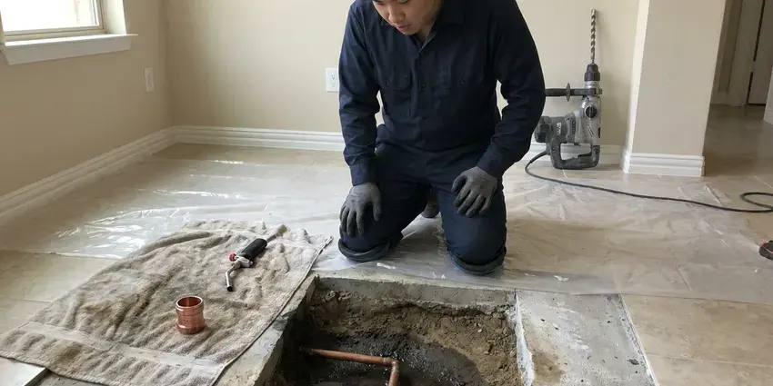

Trenchless Pipe Repair in Tanaina, AK
CKN Plumbing provides top-notch trenchless pipe repair across Tanaina, AK, fixing your plumbing issues without extensive digging.
- Fast, Efficient Repair
- Camera-Verified Results
- Fast, Reliable Service
- Expert Plumbers

Repair Your Pipe Without Digging Up the Yard in Tanaina, AK.
Our team is ready to provide a free, no-obligation estimate for your plumbing needs.
Proven Trenchless Pipe Repair Solutions Across Tanaina, AK
CKN Plumbing uses trenchless pipe repair to save driveways, patios, mature trees and landscaping. Most jobs need one or two small access pits instead of a full-length trench. The result is a seamless, root-resistant pipe with a long service life.
Our expertise includes:
- Point repair for isolated pipe damage
- Pipe bursting with HDPE for collapsed or undersized lines
- Cured-in-place pipe lining for cracked, rooted or separated sewer lines

Additional Plumbing Repair Services in Tanaina, AK
We offer expert plumbing repair services across Tanaina, AK to fix leaks, restore flow, and keep your system running smoothly.


Customers
Why Choose CKN Plumbing for Trenchless Pipe Repair in Tanaina, AK?
Our experienced plumbers are trained in the latest trenchless technologies, so your pipe repair is handled with precision. We pride ourselves on clear communication and lasting results for every client.
- Seamless Pipe, Lined and burst pipes have no joints for roots to get into.
- Minimal Disruption, Trenchless repair methods protect your landscaping, driveways, and foundations, unlike traditional excavation.
- Durable Results, The new pipe material or liner creates a strong, corrosion-resistant pipe within your existing infrastructure.
Citywide Coverage
We provide trenchless pipe repair throughout Tanaina, including neighborhoods with mature trees and older clay or cast iron sewer lines. Our equipment fits most residential and commercial sites.
Experienced Team
Our team of plumbers is highly trained and certified in all trenchless pipe repair techniques, including CIPP lining and pipe bursting. They bring years of experience with the underground pipe systems found in Tanaina.
Safety-First Approach
Trenchless repairs meet local plumbing code and are inspected by camera before we finish. When a permit or city inspection is required, we take care of it.
Trusted Certified Tanaina Plumbing Services Professionals
At CKN Plumbing, we take pride in providing licensed, certified plumbing services throughout Tanaina, AK. Backed by recognized industry credentials, our experienced plumbers combine technical skill with genuine customer care. Whether it is repair, installation, or maintenance, we follow strict safety and quality standards to deliver lasting results you can trust.
Call Us Now PHCC Plumbing Contractor Recognition
PHCC Plumbing Contractor Recognition Better Business Bureau (BBB) Accreditation
Better Business Bureau (BBB) Accreditation Angi Certified Pro
Angi Certified Pro ISO 9001 Quality Management Certification
ISO 9001 Quality Management CertificationReliable Trenchless Pipe Repair Services in Tanaina, AK
Sectional Point Repair in Tanaina
When damage is confined to a specific section of pipe, sectional point repair is an ideal trenchless solution. We target only the damaged area, installing a patch or liner to seal the leak or reinforce the pipe. This method is cost-effective and limits the scope of work, which suits isolated issues in Tanaina without affecting the entire line.

Trenchless Sewer Line Repair in Tanaina
Sewer line issues can be a nightmare, but our trenchless sewer line repair services reduce the mess and disruption. We can repair or replace sewer lines damaged by tree roots, corrosion, or ground shifting. Permafrost in colder parts of Alaska complicates any buried plumbing, and thawing ground can cause settling that cracks pipes. These methods prevent the need for extensive excavation across your yard or under driveways. We can handle everything from minor cracks to complete pipe collapses, restoring your sewer system promptly and efficiently in Tanaina.
Commercial Trenchless Pipe Repair in Tanaina
Commercial properties often have sewer and storm lines under parking lots, sidewalks and buildings. Trenchless repair avoids costly concrete demolition and disruption to tenants and customers. We line larger diameter pipes and multiple laterals. We schedule work to minimize impact on business operations.
Lateral and Spot Lining in Tanaina
Not every pipe needs to be lined end to end. When damage is limited to a few joints or a short section, we can install a short sectional liner. This costs less than a full-length liner and is completed fast. We verify the rest of the line is sound before recommending a spot liner.
Trenchless Water Line Replacement in Tanaina, AK
Main water lines can also be replaced with trenchless methods. We can pull new HDPE or PEX pipe through the old path using bursting or a directional boring tool. This avoids digging across lawns, driveways and walkways. The new line is pressure tested before service is restored.
Trenchless vs Traditional Repair Cost in Tanaina, AK
Trenchless repair can cost more per foot of pipe than open trenching. However, once you add the cost of restoring driveways, patios, landscaping and irrigation, trenchless is often the better value. It is also faster and less disruptive. We compare both methods with real numbers for your property.
Cost-Effective Trenchless vs. Traditional in Tanaina, AK
While the initial cost of trenchless pipe repair might seem comparable to traditional methods, the long-term savings are often substantial. Trenchless avoids expenses related to extensive landscaping restoration, driveway replacement, or foundation repairs. For homeowners in Tanaina, AK, where traditional digging could damage established gardens or hardscapes, trenchless offers a clear advantage in overall cost and convenience. We provide transparent estimates comparing both options so you can make an informed decision.

Cured-in-Place Pipe (CIPP) Lining in Tanaina
CIPP lining is a popular trenchless method where we insert a resin-saturated felt tube into the existing damaged pipe. The liner is then cured in place using heat or air, creating a new, seamless pipe within the old one. This method is well suited for repairing cracks, breaks, and root intrusion without digging up your yard in Tanaina.
Trenchless Pipe Repair Near Me in Tanaina, AK
Looking for 'trenchless pipe repair near me' in Tanaina? CKN Plumbing is your local expert, providing prompt and professional services across the area. We know the soil conditions and foundation types common in Alaska that can affect underground pipes, and we offer tailored solutions.
If you're searching for 'trenchless pipe repair near me' in Tanaina, AK, call CKN Plumbing. We are your local experts, equipped with the knowledge and tools to handle any underground pipe issue with precision and care. Our team is committed to providing prompt service to all areas.
CKN Plumbing at a Glance
- Fully licensed plumbing team covering Tanaina, AK
- 24/7 emergency service with same-day scheduling
- Upfront, flat-rate pricing before work begins
- 4.9-star rated by 309+ Alaska customers
Tanaina Map
Tanaina Information
- Population
- 8,817
- Area codes
- Local
- Service area
- Tanaina and communities within 40 miles
- Nearby
- North Lakes, Wasilla, South Lakes, Meadow Lakes
Trenchless pipe repair is especially valuable for homes in Tanaina, AK, where traditional excavation can be disruptive and costly, so minimal-dig solutions help property owners.
Expert Services
Trust our professionals for reliable CKN Plumbing solutions in Tanaina, AK.
Our Specialized Plumbing Services in Tanaina, AK
At CKN Plumbing, we provide a complete range of plumbing services across Tanaina, AK. From leak detection to full system installations, our team ensures fast, precise, and affordable service for both residential and commercial properties. Explore our core services below:


How Our Trenchless Pipe Repair Process Works in Tanaina, AK
Our trenchless pipe repair process is designed for efficiency and minimal impact on your Tanaina property. We use a step-by-step approach for a durable and effective repair.
Request a Quote
Contact CKN Plumbing today at (928) 470-9007 to schedule an initial consultation. We'll discuss your pipe issues and determine if trenchless repair is the right solution for your property.
Camera Inspection
We use advanced sewer camera inspection to accurately locate and assess the damage within your underground pipes. This allows us to pinpoint the problem without any unnecessary digging.
Repair Method Selection
Based on the inspection, we'll recommend the most fitting trenchless method, whether it's CIPP lining, pipe bursting, or a localized repair. We explain the process and materials involved in plain terms.
Frequently Asked Questions About Trenchless Pipe Repair in Tanaina
The cost of trenchless pipe repair in Tanaina varies widely depending on the pipe's length, diameter, type of damage, and the specific trenchless method used, such as CIPP lining versus pipe bursting. In general, you can expect costs to range from $80 to $250 per linear foot for residential projects. A camera inspection is essential for an accurate estimate from CKN Plumbing.
Yes. Our trenchless repairs carry a written warranty, and liners and pipe carry manufacturer warranties. We explain coverage before the job starts.
We use liners and resins from established manufacturers such as Perma-Liner and similar systems rated for sewer use. We choose materials based on pipe size and condition.
No. Lined and burst pipes are seamless, so there are no joints for roots to enter. This makes them a strong choice for properties with mature trees.
While trenchless methods are very versatile, they are not suitable for all types of pipe damage. Severely collapsed pipes, pipes with significant offsets, or pipes that have suffered extreme structural failure may still require traditional excavation. A professional camera inspection from CKN Plumbing will confirm what is possible.
CKN Plumbing uses high-quality, industry-leading brands and materials for our trenchless pipe repair services. This includes CIPP lining materials like those from Perma-Liner, known for their strength and longevity, and specialized tools from Picote for precise pipe preparation. We make sure all materials meet or exceed local plumbing codes for durability and performance.
Most common pipe materials, including cast iron, clay, PVC, and concrete, can be repaired using trenchless methods. However, the condition of the existing pipe is a factor. If a pipe is completely collapsed or badly misaligned, pipe bursting might be a more suitable trenchless option than lining. Our inspection will determine the best approach.
Trenchless pipe repairs, especially CIPP lining and pipe bursting using materials like epoxy resins and HDPE pipe, are designed to last for 50 years or more. These materials are very resistant to corrosion, root intrusion, and chemical breakdown, offering a very durable solution.
What People Are Saying About Our Plumbing Experts?

Mark T.
When our office needed drain cleaning, CKN Plumbing provided quick, reliable service. The plumber arrived on time and made sure every drain flowed perfectly before leaving. Very satisfied.
Drain Cleaning · Fishhook, AK
Robert G.
The trenchless sewer replacement saved our front yard. They walked us through the camera inspection footage first so we knew exactly what we were paying for.
Sewer Line Replacement · Fishhook, AK
Laura S.
I scheduled a water heater replacement, and the team made the process smooth and affordable. The new unit works perfectly, and they cleaned up after completing the job.
Water Heater Replacement · Fishhook, AK
Daniel K.
A pipe burst at 11 pm and they actually answered. The plumber showed up within the hour, shut everything down, and had us back to normal the next morning. Could not ask for more.
Emergency Plumbing · North Lakes, AK
Emily R.
I called CKN Plumbing for plumbing repair, and the technician was fast, polite, and thorough. They explained the problem clearly and fixed it the same day. I will definitely hire them again. Highly recommended!
Plumbing Repair · South Lakes, AKJames P.
Our commercial plumbing system had a leak under the sink, and CKN Plumbing handled it professionally. The plumbers arrived quickly and restored everything without disruption to our customers.
Commercial Plumbing · South Lakes, AK